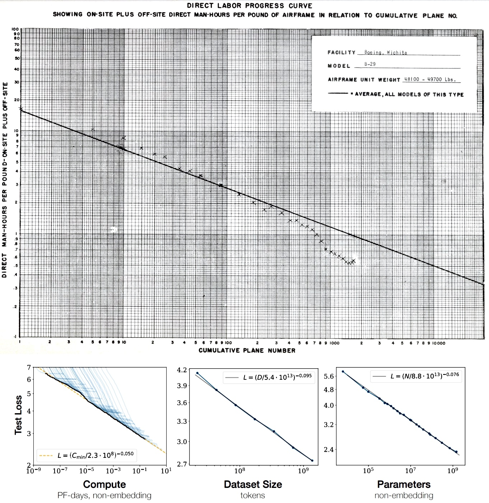

Recent history
Cameron Moll created the diagram around 2005. He started giving presentations showing it, such as this presentation “Essential Web Skills” given at the Webmaster Jam Session of Dallas, Texas, on 2006-09-22, at slide 18. It was given as “Lesson 3: Good designers fix problems. Great designers prevent them.”:
As the creator of the original Wald diagram in 2005 that inspired the duplicates that have followed, absolutely yes. (Clearly the aircraft I chose at the time was not historically accurate.) pic.twitter.com/bVv3hyyKOn
— Cameron Moll (@cameronmoll) October 18, 2020
Sometime in the early 2000s I stumbled on the story of Abraham Wald who plotted bullet holes on aircraft returning from battles in WWII. … At the time I was actively speaking at web conferences in the US & Europe on the topic of problem solving among other things, and Wald’s story was a terrific demonstration of solving (and defining) the right problem. I wasn’t aware of anyone who had visualized this, so sometime around 2005 I hastily plotted fictitious red dots on a poorly-chosen commercial aircraft outline and began including this in slide decks and blog posts.
Moll stated that he just grabbed a random commercial aircraft and added the red marks at random to illustrate the concept, without historical accuracy. He didn’t say which plane it is, but I think it is a Douglas C-47 Skytrain (identified by o3, “lgtm” by me), which is actually a military transport airplane.

{kind=link}
On 2016-11-12, McGeddon added Survivorship-bias.png to Wikimedia and then put it in the Wikipedia page on “Survivorship Bias”. This time, the lucky aircraft was Lockheed PV-1 Ventura. McGeddon updated the diagram to a SVG in 2021. This seems to be the version most commonly posted around.
{kind=link}

{kind=link}
It is interesting to note that in all cases, some of the bullet marks are historically anti-accurate. Specifically, the places identified as most vulnerable by the Luftwaffe – the oil tanks between the inner two engines – are filled with bullet marks.
What did the Germans know?
Die Kriegsflugzeuge der Feindmächte
On 1942-09-01, the Luftwaffe published Frontnachrichtenblatt der Luftwaffe, Sonderausgabe: Die Kriegsflugzeuge der Feindmächte, meaning “Front News Sheet of the Luftwaffe, Special Edition: The Warplanes of the Enemy Powers”. The pdf of the handbook is available online.
The cover states:
Der Oberbefehlshaber der Luftwaffe
Führungsstab IC
Nicht zum Feindflug mitnehmen!The Commander-in-Chief of the Luftwaffe
General Staff, Section IC
Do not take them on enemy missions!
Page 2 further specifies that it was a “special issue” that is intended for the classroom.
Vorliegendes Sonderheft zum Aushang bringen und zum Unterricht benutzen!
Please display this special issue and use it in class!
It was updated on 1943-11-01, still titled Die Kriegsflugzeuge der Feindmächte. That version is also available online.
How to read the book
The most important part is on page 2 of the book, which gives the following legend:
- Protected fuel tanks
- Unprotected fuel tanks
- Armor
- Machine gun
- Machine gun in Bodenlafette
- Cannon
The most important areas are the “unprotected fuel tanks”. Apparently those were not self-sealing, and prone to exploding when shot at.
Anordnung der Bewaffnung, der Kraftstoffbehälter und der Panzerung bei den wichtigsten Kriegsflugzeugen der Feindmächte
In den Zeichnungen sind die Bewaffnung, die Kraftstoffbehälter und die Panzerung nach nachstehendem Schema eingezeichnet:
- Kraftstoffbehälter geschützt
- Kraftstoffbehälter ungeschützt
- Panzerung
- MG
- MG. in Bola
- Kanone
Die Skizzen sind ohne bestimmten Maßstab. Die Eintragungen wurden auf Grund der zur Zeit vorhandenen Unterlagen – soweit möglich unter Auswertung der Beuteflugzeuge – durchgeführt.
Es ist anzunehmen, daß alle Flugzeuge mindestens mit einem Rückenpanzer für den Flugzeugführer behelfsmäßig ausgestattet sind. Bei den Flugzeugmustern, bei denen an Hand von Beuteflugzeugen eine Panzerung festgestellt wurde, ist diese in den Skizzen eingezeichnet.
Bei den neusten Flugzeugen finden sich nunmehr auch geschützte Kraftstoffbehälter.
Bei den Angaben über die Bewaffnung ist zu berücksichtigen, daß ein und dasselbe Flugzeugmuster verschiedene Bewaffnung aufweisen kann, z. B. Doppel-MG. statt Einfach-MG., Kanonen statt starre MG. usw. Alle bisher bekanntgewordenen Bewaffnungsarten sind bei den jeweiligen Mustern in der Beschreibung auf der Skizze vermerkt.
Die Skizzen von Feindflugzeugen mit Eintragung der Bewaffnung, der Kraftstoffbehälter und der Panzerung werden entsprechend eingehender neuer Unterlagen laufend berichtigt und für neu eingesetzte Flugzeugmuster laufend ergänzt werden!
Arrangement of armament, fuel tanks, and armor on the enemy powers’ most important warplanes
The drawings show the armament, fuel tanks, and armor according to the following scheme:
- Protected fuel tanks
- Unprotected fuel tanks
- Armor
- Machine gun
- Machine gun in Bodenlafette
- Cannon
The sketches are not to a specific scale. The entries were made based on currently available documentation – where possible, by evaluating captured aircraft.
It can be assumed that all aircraft are equipped with at least a makeshift dorsal armor for the pilot. For aircraft models where armor was identified based on captured aircraft, this is shown in the sketches.
The newest aircraft now also have protected fuel tanks.
When specifying armament, it should be noted that the same aircraft model can have different armaments, e.g., twin machine guns instead of single machine guns, cannons instead of fixed machine guns. etc. All armament types known to date are noted in the description on the sketches for the respective models.
The sketches of enemy aircraft, including the armament, fuel tanks, and armor, are continually being corrected as new documentation becomes available and are continually being supplemented for newly deployed aircraft types.
Lockheed Ventura
Sadly, the textbook didn’t show us the weak points of the Lockheed Ventura are supposed to be, but they did show those for Lockheed Hudson, and since they both share the same basic Lodestar-derived wing and engine-nacelle architecture, I think their internal placement of oil tanks within the nacelles should be basically identical. The textbook has this to say about the Ventura:
Der Rumpf des Musters Lockheed „Ventura“ ist im Unterschied vom Muster Lockheed „Hudson“ hinter dem Turm um rund 1 m länger, so daß sich der MG.-Turm mit Kuppel aus durchsichtigem Werkstoff (s. oberes Bild!) entsprechend weiter vom Leitwerk entfernt befindet als beim Muster Lockheed „Hudson“. Ferner weist das Muster Lockheed “Ventura” im Unterschied zum Muster Lockheed „Hudson“ eine Stufe für das Boden-MG. an der Rumpfunterseite auf.
In contrast to the Lockheed “Hudson” type, the fuselage of the Lockheed “Ventura” is about 1 m longer aft of the turret, so that the machine-gun turret with a transparent-material dome (see upper illustration!) sits correspondingly farther from the tail unit than on the Hudson. Moreover, unlike the Hudson, the Ventura features a stepped fairing on the underside of the fuselage for the ventral machine gun.

Boeing B-17 and B-24
But what we really want to know are of course the B-17 and the B-24. What did the Germans know about them?
In the 1943 update, the B-17 diagram has more details:
And the B-24 diagram finally has the fuel tanks marked out:
Two posters
I found two posters published in 1943. Presumably they were hung on Luftwaffe classrooms. They showed in detail what the Luftwaffe knew about B-24 and B-17 as of 1943.
B-24
A detailed teaching poster for B-24 was salvaged from England in 1943 by Frank Ashby, and presented to Reed Cheek in 1976. It is a photographic reproduction in 1943-10, by the Reproduction Platoon of 901st Engineer Air Force Headquarters Company, which was attatched to the 8th Air Force of the USA, which was established in 1942 specifically to fight the air war in Europe.
It was printed in pp. 10–11 of Journal of the Second Air Division Association, Newsletter, Vol. 18, No. 2, 1979-06. I tried my best to stitch the two pages together without seams in the middle.

Frame 4 “Lage der Behälter” shows where the fuel tanks are. Frame 7 states that
EMPFINDLICHSTER TEIL DES FLUGZEUGES
Der ganze Flügel zwischen den inneren Motoren bis ca. 2|3 der Tiefe. ÖLBEHÄLTER
in den Gondeln hinter den MotorenMOST SENSITIVE PART OF THE AIRCRAFT
The entire wing between the inner engines to about 2/3 of the depth
OIL TANK
in the nacelle behind the engines
Frame 3 shows various locations at which B-24 was armored, and the thickness of the armor measured in mm. Specifically, it shows the armor thickness on cockpit window and several turrets, where human crews were located and needed the armor. Also notable is the “Panzerglass” at the tail, which stands for “armored glass”.
Frame 5 shows the two hemispheres (front and back) of the complete sphere-of-fire of B-24D. The B-24D itself is visible as a small horizontal line in the middle of each hemisphere. On the diagram, different hatch patterns mark sectors “swept” (bestrichen) by each gun position. For a typical B-24 D, with a Martin 250-CE top turret, hand-held nose guns, waist guns, a Sperry ball turret and the Consolidated A-6 tail turret, the shaded arcs match the hardware fairly well.
VIERMOTORIGES KAMPFFLUGZEUG CONSOLIDATED B. 24 D. “LIBERATOR„
Min. dell’ Aeron. – Stab. Fotomecc. 1943-XXI
REPRODUCTION PLATOON, 901st ENGINEER AF HQ CO
? 277 EN 10/43
Einzelheiten der Seitenwaffen des Rumpfes
Jede Waffe hat ihren eigenen Schützen
Feuerabschnitte Seitenansicht Ansicht von oben
Lage der Panzerung
Lage der Behälter
Darstellung des Überschneidens der Feuerabschnitte
Vorderensicht
Rückenansicht
- Ausschnitt von den Rückenturmwaffen bestrichen.
- Ausschnitt von den Seitenwaffen bestrichen.
- Ausschnitt von den Bugwaffen bestrichen.
- Ausschnitt von der Heckwaffen bestrichen.
- Ausschnitt von den Bauchwaffen bestrichen.
Darstellung der von den Bordwaffen bestrichenen Räume Alle Waffen sind Kaliber 12,7 mm. Die wirksamsten sind gekennzeichnet (*)
EMPFINDLICHSTER TEIL DES FLUGZEUGES Der ganze Flügel zwischen den inneren Motoren bis ca. 2|3 der Tiefe.
ÖLBEHÄLTER in den Gondeln hinter den Motoren
Einzelheiten über die Unterbringung der vorderen Waffen
Ansicht von oben Seitenansicht Die 3 Waffen werden nur von einem Schützen bedient
Horizontfeuerausschnitte
BESONDERE ANGABEN
Flügelspannweite 33,50 m
Länge 19,50 m
Motorenstärke beim Start 4 × 1200 CV. Besatzung 6 + 9
Günstigste Flughöhe 5000 m
Höchstgeschwindigkeit in vorteilhafter Flughöhe 490 St/km
Reisegeschwindigkeit in bester Flughöhe 340 St/km
Gipfelhöhe 9000 m
FOUR-MOTORED FIGHTER AIRCRAFT CONSOLIDATED B-24D “LIBERATOR”
Ministero dell’aeronautica [Ministry of Aeronautics] – Photomechanical Staff, 1943 (Year XXI of the Italian Fascist calendar) Reproduction Platoon, 901st Engineer Air Force Headquarters Company
Document ? 277 EN, October 1943
Details of the fuselage’s side weapons
Each weapon has its own gunner
Firing compartments Side view Top view
Location of armor
Location of the tanks
Illustration of the overlap of the firing compartments
Front view
Dorsal view
- Section of the dorsal turret weapons.
- Section of the side weapons.
- Section of the bow weapons.
- Section of the stern weapons.
- Section of the belly weapons.
Illustration of the compartments covered by the onboard weapons All weapons are 12.7 mm caliber. The most effective ones are marked (*)
MOST SENSITIVE PART OF THE AIRCRAFT The entire wing between the inner engines, up to approximately 2/3 of the depth.
OIL TANKS in the nacelles behind the engines
Details of the forward weapon placement
Top view Side view The three weapons are operated by a single gunner
Horizontal firing cutouts
SPECIAL INFORMATION
Wingspan 33.50 m Length 19.50 m Engine power at takeoff 4 × 1200 hp Crew 6 + 9 Best altitude 5000 m Top speed at best altitude 490 km/h Cruise speed at best altitude 340 km/h Ceiling altitude 9000 m
B-17
This is a lot blurrier and I tried my best to transcribe it, with less success. Source
In short, it looks as what you might expect. Again, the poster points out the fuel tanks, near the center, as the weak spot.
EMPFINDLICHSTER TEIL DES FLUGZEUGES
Der ganze Flügel zwischen den inneren Motoren bis ca. 2/3 der Tiefe
ÖLBEHÄLTER
in der Gondel hinter dem MotorenMOST SENSITIVE PART OF THE AIRCRAFT
The entire wing between the inner engines to about 2/3 of the depth
OIL TANK
in the nacelle behind the engines

If those wireframes amuse you, just know that they built actual models for use at school.
{kind=link}
What did the Americans know?
In the WWII, a research group was established at Columbia University focused on military problems during World War II, the Statistical Research Group. Among its members was the titular Abraham Wald. The airplane story probably originated from a series of 8 memoranda circulated in 1943, which remained classified until they were finally published in 1980 for the general public. (Wald 1980)
They are extremely technical, and I did not understand them. Of these, memoranda 5 looked closest to the legend. It studied the problem of, given only data gathered from returned aircrafts, inferring the probability that an aircraft would return, conditional on being hit at various locations.
The SRG carried out literally hundreds of analyses: how the ammunition in aircraft machine guns should be mixed; quality examination methods for rocket fuel; “the best settings on proximity fuzes for air bursts of artillery shells against ground troops”; “to evaluate the comparative effectiveness of four 20 millimeter guns on the one hand and eight 50 caliber guns on the other as the armament of a fighter aircraft”; calculating “pursuit curves” for targeting missiles and torpedoes. “Statistical studies were also made of stereoscopic range finders, food storage data, high temperature alloys, the diffusion of mustard gas, and clothing tests.”
I will not attempt to describe exactly what the memoranda does, and point the reader towards AMS Feature Column: The Legend of Abraham Wald, and references within, especially (Mangel and Samaniego 1984).
Despite the lack of drama in the memoranda, it seems he really did do what the anecdote do, even though we have no idea about the further details, such as which planes’ vulnerabilities he studied:
Wald wrote a series of memoranda on estimating the vulnerability of various parts of an airplane from data showing the number of hits on the respective parts of planes returning from combat. The vulnerability of a part (engine, aileron, pilot, stabilizer, elevator, etc.) is defined as the probability that a hit on that part will result in destruction of the plane (fire, explosion, loss of power, loss of control, etc.). The military was inclined to provide protection for those parts that on returning planes showed the most hits. Wald assumed, on good evidence, that hits in combat were uniformly distributed over the planes. It follows that hits on the more vulnerable parts were less likely to be found on returning planes than hits on the less vulnerable parts, since planes receiving hits on the more vulnerable parts were less likely to return to provide data. From these premises, he devised methods for estimating the vulnerability of various parts.
Sequential test
Other than the aircraft story, Wald most famous for devising the sequential probability ratio test. It has been mentioned before in Predicting AGI by the Turing Test.
Sometime in late 1942, W. Allen Wallis was asked by Navy Captain Garret L. Schuyler the following question about efficiently testing ordinances:
Some of these samples ran to many thousands of rounds. He said that when such a test program is set up at Dahlgren it may prove wasteful. If a wise and seasoned ordnance expert like Schuyler were on the premises, he would see after the first few thousand or even few hundred [rounds] that the experiment need not be completed, either because the new method is obviously inferior or because it is obviously superior beyond what was hoped for. He said that you cannot give any leeway to Dahlgren personnel, whom he seemed to think often lack judgment and experience, but he thought it would be nice if there were some mechanical rule which could be specified in advance stating the conditions under which the experiment might be terminated earlier than planned.
So Wallis talked about it with Milton Friedman (more famous for other work), and they quickly realized that it might just work.
The fact that a test designed for its optimum properties with a sample of predetermined size could be still better if that sample size were made variable naturally suggested that it might pay to design a test in order to capitalize on this sequential feature; that is, it might pay to use a test which would not be as efficient as the classical tests if a sample of exactly \(N\) were to be taken, but which would more than offset this disadvantage by providing a good chance of terminating early when used sequentially.
They realized they were out of their mathematical depths, and recruited Wald. At first, Wald thought it was impossible, because it looked like they wanted to do better than the uniformly most powerful test. But he came around, and solved it in 3 days.
No doubt this antipathy was strengthened by our calling the new tests “supercolossal” on the grounds that they are more powerful than “most powerful” tests. … The next day Wald phoned that he had thought some about our idea and was prepared to admit that there was sense in it. That is, he admitted that our idea was logical and worth investigating. He added, however, that he thought nothing would come of it; his hunch was that tests of a sequential nature might exist but would be found less powerful than existing tests. On the second day, however, he phoned that he had found that such tests do exist and are more powerful, and furthermore he could tell us how to make them. He came over to the office and outlined his sequential probability ratio to us. This is the ratio of the probability under the null-hypothesis, with which I had been puttering around, to the probability under the alternative hypothesis-or rather, the reciprocal of this ratio. He found the critical levels by an inverse probability argument, showing that the same critical levels result no matter what assumption is made about the a priori distribution.
Some bonuses
The first scaling plot?

The first application of ReLU for war?

In 1951, Marvin Minsky and Dean S. Edmonds built Stochastic Neural Analog Reinforcement Calculator, possibly the first neural network trained by Reinforcement Learning. It used a surplus gyroscopic autopilot from a B-24.
Minsky told George Miller, at Harvard, about the prospective design. “He said, ‘Why don’t we just try it?’” Minsky recalled. “He had a lot of faith in me, which I appreciated. Somehow, he managed to get a couple of thousand dollars from the Office of Naval Research, and in the summer of 1951 Dean Edmonds and I went up to Harvard and built our machine. It had three hundred tubes and a lot of motors. It needed some automatic electric clutches, which we machined ourselves. The memory of the machine as stored in the positions of its control knobs—forty of them—and when the machine was learning it used the clutches to adjust its own knobs. We used a surplus gyropilot from a B-24 bomber to move the clutches.”
Milton Friedman was such an expert on proximity fuzes that he was consulted on it during the Battle of the Bulge.
During the Battle of the Bulge in December 1944, several high-ranking Army officers flew to Washington from the battle, spent a day discussing the best settings on proximity fuzes for air bursts of artillery shells against ground troops, and flew back to the battle to put into effect advice from, among others, Milton Friedman, whose earlier studies of the fuzes had given him extensive and accurate knowledge of the way the fuzes actually performed.
Other things he studied included sequential testing, a statistical procedure to ensure that the detonator for the atom bomb worked, the best composition of a high temperature alloy for jet engines, etc.
The origin of the joke about “statisticians drowning in streams only 1 meter deep on the average”:
Finally, a legend that has had some currency concerning Hotelling’s work at Dahlgren: For his first visit, Hotelling was told that a station wagon to Dahlgren would leave the main Navy building in Washington at 8:00 a.m. Someone else told him 8:30 a.m. He arrived at 8:15, missing the station wagon by 15 minutes. This led to much joking about statisticians drowning in streams only three feet deep on the average. Actually he had started in time to be confident of arriving by 7:45 a.m., but had encountered an extraordinary delay of more than half an hour. Nevertheless, the legend lives on. I do not expect this note to slay it, any more than I expect my paper to slay the legend about Wald’s work being given a security classification and snatched away from him because he lacked a security clearance.
Metadata
Seeds planted by a thread about “1/10 uni experiences” on twitter on 2025-05-01.